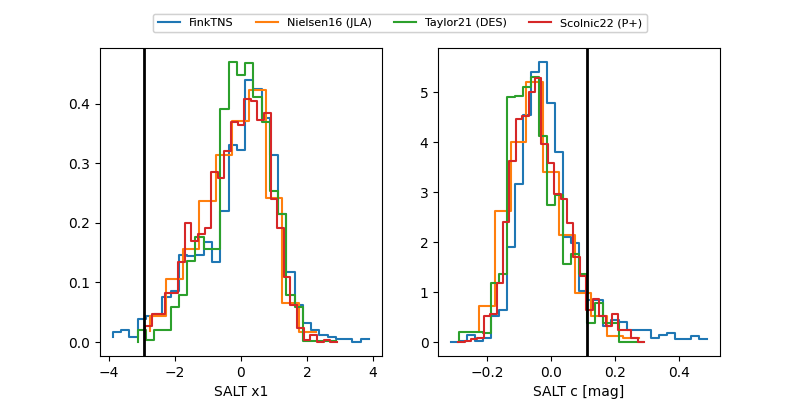

TNS: 2025xlc
YSE: 2025xlc
2025xlc (yse,tns)
PS25hma (panstarrs)
equatorial (ra, dec) = (240.6876,+25.25399)
galactic (l, b) = (41.6534,+47.30143)

last ps1::r=19.92, ps1::z=20.09
1 ps1::r, 1 ps1::z detections